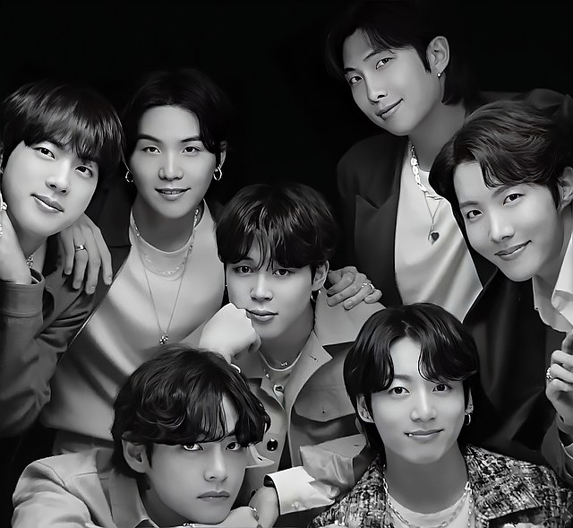
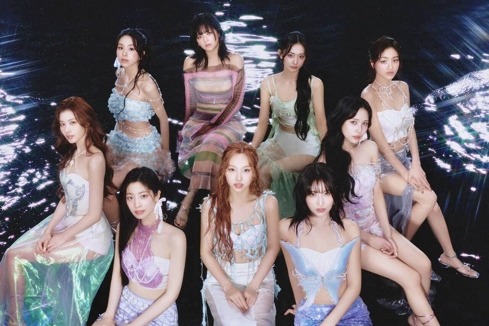
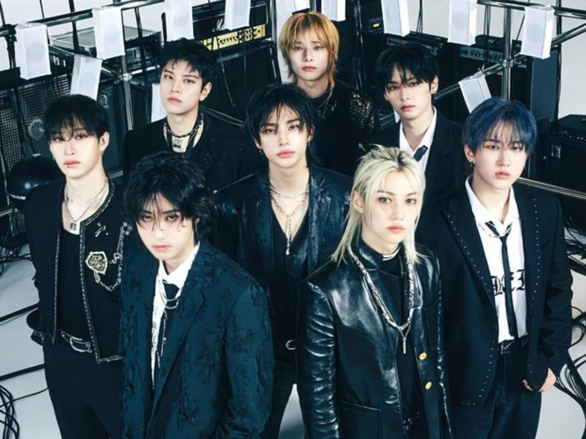

El K-Pop ha conquistado al mundo, ya que es un fenómeno que ha roto barreras culturales y revolucionado la industria musical. Gracias a grupos muy reconocidos como BTS, BLACKPINK, TWICE, STRAY KIDS, (G)I-DLE, etc. El K-Pop ha logrado mezclar géneros como el pop, hip-hop, EDM, rap, rock y R&B, de maneras muy creativas, creando sonidos frescos e hipnóticos, acompañados de coreografías muy bien diseñadas.
Algunos grupos más conocidos:
BLΛƆKPIИK

Es una contradicción de la percepción común del color rosa. BLACKPINK simboliza que ellas son un equipo que engloba belleza y talento. Debutaron el 8 de agosto del 2016, bajo YG Entertainment.
BLACKPINK realizaría su debut el 8 de agosto del 2016. Formando parte de la tercera generación. Es el grupo femenino con mayor reconocimiento e impacto mundial, teniendo muchos premios, logrando récords de vistas y presentandose a eventos tan importantes como COACHELLA, así mismo teniendo colaboraciones con artistas de talla mundial. Blackpink es el unico grupo en que sus solistas son muy reconocidas.
Fandom: BLINK
Lema: "BLACKPINK In Your Area" o "BLACKPINK Is The Revolution"
Integrantes: Jisoo, Jennie, Rosé, Lisa.
BTS
Significa "Chicos a prueba de balas" y "Beyond The Scene". Debutaron el 13 de junio de 2013, bajo Big Hit Entertainment.
BTS realizaría su debut el 13 de junio del 2013. Formando parte de la tercera generación. Es el grupo masculino con mayor reconocimiento e impacto mundial, teniendo muchos premios, logrando récords de vistas y teniendo colaboraciones con artistas de talla mundial.
Fandom: A.R.M.Y.
Lema: "Love yourself, speak for yourself"
Integrantes: Jin, Suga, J-Hope, RM, Jimin, V, Jung Kook.
TWICE
Se refiere a que TWICE te conquistará "Dos veces": una vez por los ojos y otra por los oídos. O lo que sería lo mismo, la primera por sus increíbles puestas en escena y la segunda vez con su excepcional música.
Es un grupo musical femenino surcoreano formado por JYP Entertainment a través del programa llamado Sixteen. Twice debutó oficialmente el 20 de octubre de 2015. Formando parte de la tercera generación. TWICE es el segundo grupo femenino con más impacto. Tienen una sub-unidad llamada MISAMO.
Fandom: ONCE
Lema: "One in a million!"
Integrantes: Nayeon, Jeongyeon, Momo, Sana, Jihyo, Mina, Dahyun, Chaeyoung, Tzuyu.
Stray Kids
Su nombre significa "Niños Perdidos", os mismos integrantes escogieron su nombre porque juntos están buscando su lugar en el mundo, luchando por todos sus sueños y metas. Debutaron el 25 de marzo de 2018, bajo JYP Entertainment, a través del reality show homónimo.
Fandom: STAY
Lema: "Step Out. Stray Kids."
Integrantes: Bang Chan, Lee Know, Changbin, Hyunjin, Han, Felix, Seungmin, I.N.